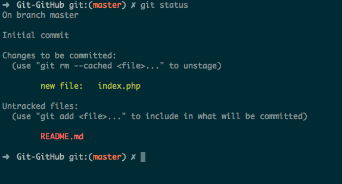

Vamos ver como você opera com vários arquivos, sem comprometer todos eles. Crie um segundo arquivo chamado README.md.
Adicione algumas informações, como o nome do projeto, seu nome e seu e-mail.
Execute novamente git status e você verá os dois arquivos listados como não rastreados, conforme abaixo:

Se quiser saber mais, aperte o botão abaixo e confira:
Quarta Etapa